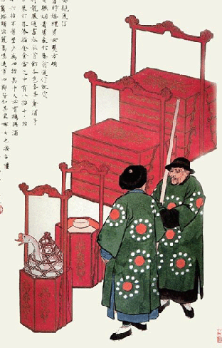

休将凡夫当超人
冯冯
迷失在未来 / 誊录
没有谁能想像一个人会忙得成什么样儿，大清早起来，做完早课，邮差来了，按铃叫收挂号信一批，十封八封不等，另外普通函件五十六十封，乃至一百余封，干脆就以专用小邮袋扔过来，还有许多的刊物报纸；然后是几句抱怨，例行的，半开玩笑的：“光是派你的信就累死了！为什么不在邮局租一个特大号邮箱？你自己拿信去！”
拆阅函件，赶着看，自然大多数都是求助的；父母病啦，孩子病啦，亲友得了癌症啦，谁撞了车昏迷啦，什么人失踪啦，什么人下落不明，又什么人被抢劫啦……有的要求指点“迷津”，有些人问吉问凶，家中闹鬼啦，家人生病，是否阴人作祟？夫妻不和，是否土地神祗供奉不对？生意不佳，是否神仙不住位神佛供桌不妥？孩子逃学是何原因？功课不好该怎么办？念佛该不该吃素？有月事可否拜佛？哪一种方法拜佛最好？关圣帝爷现居天上何职？是否真的玉帝禅了位给他？相士说将有飞灾，是什么灾？八字先生说某亲人过不了四十九岁，该如何禳解？为什么要吃素？请开张详细素食菜单来。暗恋上师兄怎么办？应否还俗？见到同修比丘尼就禁不住心生邪念，该怎么办？出家生涯夜半寂寞该怎么处理？……同修搬弄是非恶言相加，该怎样应对？打坐心生绮念如何是好？越久越动色心怎么办？师父偏心，师兄霸道；太太比河东狮更凶，诟骂无宁日。丈夫有外遇不知姘妇是谁，可否用天眼代为查出？……有何妙计可以移民美加？你可否担保助我全家移民？阅读这些五花八门的来信，已令人啼笑皆非，还有，新加坡要求寻找失踪学童，香港叫你寻下落不明的逃妻，美国加州一位太太说女儿心爱的小狗不见了，温哥华的债务官司开庭，你得用神力加持必胜，纽约的家庭诉讼案叫你帮忙，澳洲的某宅自来水管漏水了，叫你用天眼一查是在地下哪一段漏了？然后把照片用航空挂号寄回来……瑞典有人要和你做笔友，荷兰有人叫你看遗失的文件在何处？印尼问你盖一座佛寺，玉皇大帝应供奉在第几层殿？台湾癌症病人叫你施法延命，大陆有人叫你试接先天气功一招，看你招架得住否？印度有人叫你斗一斗神魔……
阅读这些五花八门的来信，叫你啼笑皆非，看着信件，电话铃又响个不停，美国的，台湾的，日本的，菲律宾的，马来西亚的，印尼的，香港的，澳洲的，阿根廷的，巴西的，法国的，加拿大的……叫你看病，看风水，看八字，看吉凶，问前途，问爱情，问生意，问香港九七问题，问美国大选，问股票，问地产，问，问，问……什么都问！套交情，有些说是三十年前与你同事，有些说五十年前见过你，还有人在六十多年前抱过你，你那时还是吃奶的孩子！自然也有些人是你前生的道侣，三世同修；还有与你前世是夫妻，也自然有人是你前世的师尊或父母，更别说同是龙华会上人！某人说你当年皈依过他，某人说你是他的学生，某人说你的小说都是他指导修改过的，自然也有人说当年你白字连篇，全亏他一一指正……这个要上门来叙旧，那个要来你家住住；有没有你的音乐匣带寄几份来听听！新作品送些来看看！某宗大师在某地说法，你为什么不去听听？某某法师有特殊法门即刻成佛，你为什么不立即去皈依？你是什么宗派出身？师承何人？为什么不见你提及？信看不完，电话听不尽，不速之客又已络绎不绝地在按门铃，求诊的，求助的，拿缘薄来叫你助修什么庙的，好奇地来看猴子般的，上门挑战的，代表某上人来教训你一顿，骂你是天魔附身，自称神妙无上什么功大师的，进了门就有什么神什么魔降临，全身发抖口吐预言的，大跳醉八仙之舞，叫你看是哪一位上仙附体，济公也来过，关圣帝君也来过，吕祖也来过，王母娘娘也来过，药师佛也来过，哭的，笑的吵闹的，大叫的……这些热闹戏文自然是较不多见，但是上门来抬杠则是常事，要降服你收归门下，要压倒你，一显威风的，要你立即悔改的，叫你改邪归正的，叫你忏悔的，叫你脱离佛教的，叫你上他们教堂信主的。
还有，来作媒的，拿了大陆女子照片上门来说亲的，什么条件都不要，只要你把她娶过来做移民，给她一幢房子，一辆汽车就行。您瞧，你这么大了，还不娶亲，不孝有三，无后为大，对得起父母吗？瞧这位小姐多好？先生才死了一年，她只有两个女孩子，都快二十岁了，不会给你麻烦，你接他们来加拿大，给她们念书就行……什么？你没兴趣？哎哟！你可别还指望要十八二十的黄花闺女呀！看看你这王老五几岁啦！年纪大一点的女子才会持家呀！年轻的女孩懂什么？对了，人家锡金喇嘛也还娶妻生子那！日本有些和尚也还可以带太太孩子住庙，你干嘛不结婚呢？娶个女人来陪伴双修多好！瞧人家这位女士多秀丽！人家不是嫁不出去，这年头，这么贤惠的女子还怕没人娶吗？换了别人人家也还看不上眼，瞧着你也还有一点儿小名气，人品也还不错，又是拜佛的，人家也就不多挑眼啦！就一样，你吃长素，人家可不能跟你吃长素哟！人家在大陆苦了那么多年，还要嫁到外国来吃长素受罪么？
要出国来，也就是希图日子过得好些呀！你吃你的素，她吃她的荤，各不相干……。做了独身汉，又是加拿大籍公民，在大陆女子眼中就是“白马王子”了，何况还是小有名气的作家呢！又何况还有一座房子，说不定还有不少美钞！每隔几天都会有人来提亲，来介绍，也还有些女子单刀直入主动地来信露骨地表示要嫁给你。从来没料到华侨王老五那么吃香，差点儿没飘飘然自以为是奇货可居的美男子了！
一个独身的修行人，竟有那么多魔障！可怕不可怕？你要清净自修，人家偏就不让你清净自修；你要清净，人家却要你染着，你为了略尽微忱，捐出廿载持念的念珠给慈济医院义卖筹募建院基金，也只不过是聊表一灯寸心，因为确实家徒四壁，无物可供佛，谁料亦有人公开嘲骂你是穷出风头，义卖所得八百万自肥，说你是沽名钓誉！叫你看了双泪迸流！你一时说漏了嘴自称是居士，马上有法师发表大文来指斥你一德俱无不配称居士。你自称是修行人，就有人质问你修的是什么行。你自说是文学作者，就有人骂你不配称作者，作品也不配称文学作品。你写佛曲圣乐，就有大法师骂你作的是“魔音”“魔曲” ，大居士指责你破坏传统。你写太空科学证佛理，就有人指出你不是科学家不配讲科学，不是佛学家，不配讲佛理。你略提佛教的神通是符合科学的超感与超能，就有人大骂你是妖魔！你提倡宗教互相合作，就有人骂你是欺师灭祖离经叛道！佛教圈本应是清净无诤的，不幸地，佛教圈内是是非非比圈外更多了！你做什么事都有人批评你，骂你，讥诮你！“闭门常思己过，闲谈莫论人非。”这句格言，在佛教圈内是很少人做得到的，也很少人知道“妒”心是“心贼”中最可怕的一种，他会无声无臭地毁人毁己于无形！
一个遁迹冰国的平凡的凡夫俗子，也没修得了什么境界，所求也只不过是清净简单朴素的凡夫生活环境而已，煮字疗饥，如今再也不可能了。盗印者早已抢尽了你的销路版税，盗印版的大量倾销，带来的只是无数读者的函电和闯关者的滋扰，使你已不再得清净，也不可再得心中清净，你自己本无烦恼，现在却成为千千万万人的烦恼垃圾堆！你观尽了众生相，一天二十四小时倾听众生的种种烦恼，为他们寻找解决办法，安慰，劝解，奔走，换来的只是“天魔”的封号！固然也有同情者给予的温暖，也有感激者的泪光，也有由衷的赞叹回音，到底也还是乐少苦多，烦恼更多！而你还不可以申诉，一申诉，就有人骂你器量狭窄，你一发表，马上就有人骂你是招摇自夸，说你生了恚心什么的，你也不可以拒绝任何人的任何要求，否则就被评责为“不慈悲”！你劝人平时吃素养生可以预防疾病，戒杀生以积善德，人家说你是“老生常谈”“迷信”，到了病人膏肓，命在旦夕，却来要求你施展神力救命，你说你无神通可挽救垂危的癌症病人，人家就骂你是不肯发慈悲心。你跟人说因果律，人家不信，你跟人说业报，人家也不信，总以为神通可敌业力，总以为神通可破因果，甚至以为你可以代世人“赎罪”！你倒情愿为世人“背十字架”，可是你有这能力吗？又有这么可以代背的因果十字架吗？紧急抱佛脚，有用吗？谁能代负因果？可是，人家都不明白，只是知道你“不慈悲”！
你在天华月刊和其他刊物发表多少次呼吁也没用，函电的大潮依然每天涌来，而且越来越汹涌。人家再也没想到你只是一个平凡的凡夫俗子，一个靠爬格子卖文为生的穷作家；人家以为你是亿万富家之子，有无限的金钱回信回电；人家以为你闲着无事；人家以为你雇有十位秘书小姐代回信件回电接见访客，也必定有什么佛教团体机构代你支付一切开销，也必定每天拥有八十八小时，谁知道你也只有二十四小时与众生无别！谁知道你并非三头六臂？谁知道你为了应付众生，已经失去了一切时间无法再爬格子！一切工作都停了罢！日夜都在回信回电应答电话！医生也有休息的时候，你却没有休息的自由，谁知道你已是在时间上破产。这就是你两年来再没有新作品发表的原因！长此以往，更不可能创作什么科学证佛理，和什么佛曲圣乐了，也不会再有“空虚的云”！最后难免到天桥下面去摆占卜摊子。
你本来一无烦恼，如今却似是身陷糖浆的蚂蚁！这碗是虚名的糖浆！你本无意名利，怎料掉到这个虚名的陷阱之中？什么时候才可挣脱再还自由呢？
佛法才是最好的医药，世人为什么不直接去学佛法？却要舍本逐末来找一个平凡渺小无能的人？为什么不认清这个平凡的学佛人是个凡夫俗子？
原载《天华》第129期：1990年2月1日
原载《天华》第130期：1990年3月1日